Around La Villa Rose
One this satellite photograph you can see just how close the lovely beach of L'Anse-à-L'äne is.
The beach of L'Anse-à-L'Âne is protected by small palm trees. There are a few bars and restaurants that will allow less courageous guests to drink without waiting the three minutes it takes to come back to La Villa Rose. You can take the shuttle to Fort-de-France from the pier in the middle of the beach. It departs every 30 minutes at rush hour, every hour otherwise.
However, the south of Martinique is not just L'Anse-à-L'Âne. Thanks to a very central location, you can easily travel to the spectacular beaches in the South, starting with Les Anses d'Arlets, Le Diamant, Sainte Luce, the famous beach at Les Salines...
You can also go to the north of Fort-de-France, in the rain forest, to the Garden of Balata and continue up the Caribbean coast, to the splendid beach at l'Anse de la Couleuvre.
On the Atlantic coast, you can admire the spectacularshallow waters, in particular the Famous Baignoire de Joséphine (allegedly Joséphine de Beauharnais, the first wife of Napoléon Ist, enjoyed bathing there) and the peninsula La Caravelle.
 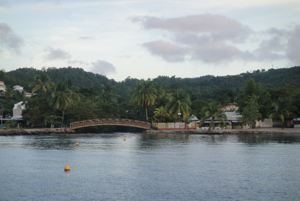
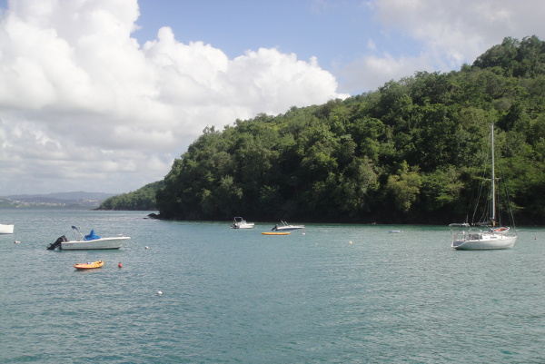
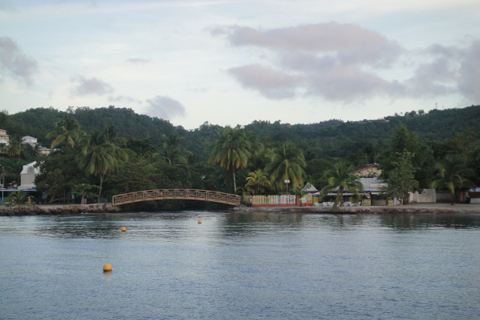
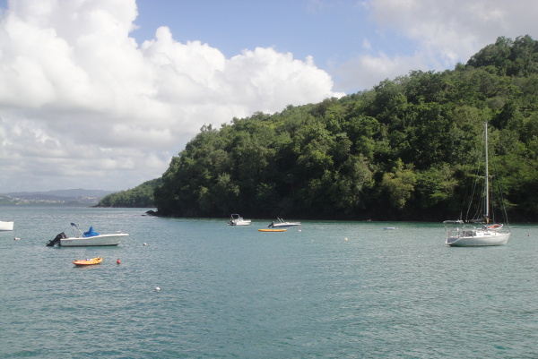

 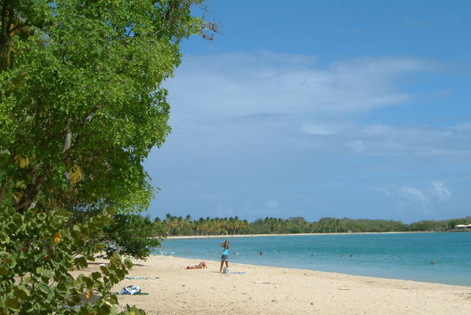
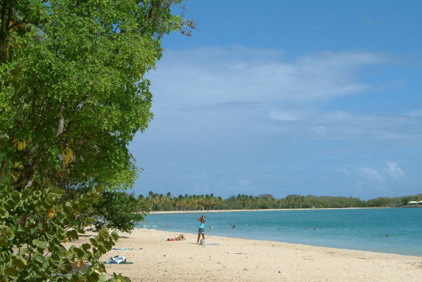

 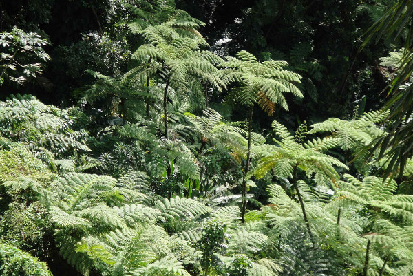
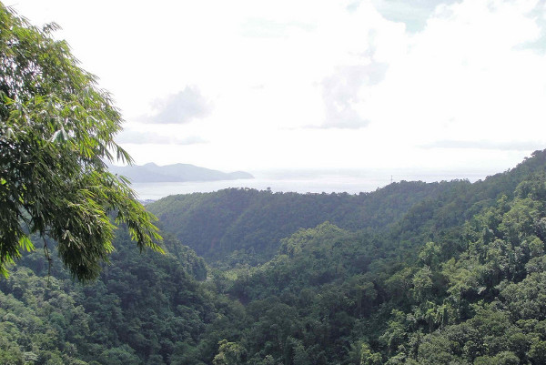
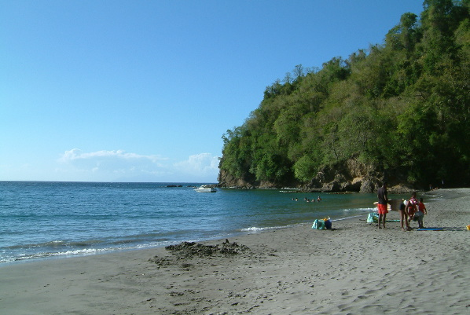
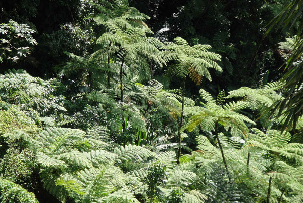
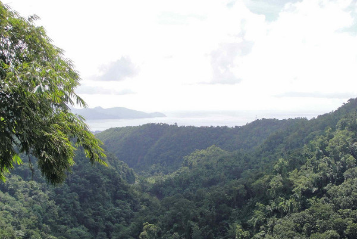
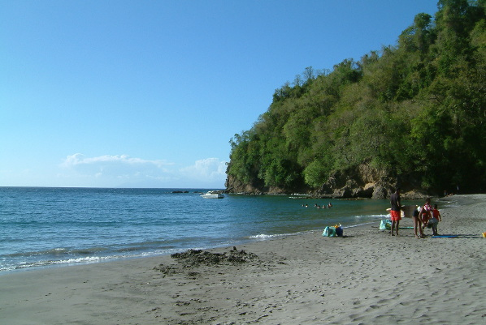